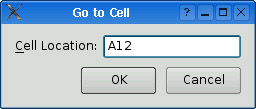
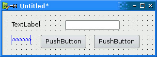
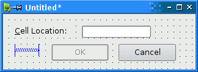
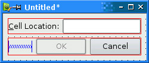
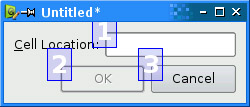

Qt is designed to be pleasant and intuitive to hand-code, and it is not unusual for programmers to develop entire Qt applications purely by writing C++ source code. Still, many programmers prefer to use a visual approach for designing forms, because they find it more natural and faster than hand-coding, and they want to be able to experiment with and change designs more quickly and easily than is possible with hand-coded forms.
Qt Designer expands the options available to programmers by providing a visual design capability. Qt Designer can be used to develop all or just some of an application's forms. Forms that are created using Qt Designer end up as C++ code, so Qt Designer can be used with a conventional tool chain and imposes no special requirements on the compiler.
In this section, we will use Qt Designer to create the Go to Cell dialog shown in Figure 2.4. Whether we do it in code or in Qt Designer, creating a dialog always involves the same fundamental steps:
1. | Create and initialize the child widgets. |
2. | Put the child widgets in layouts. |
3. | Set the tab order. |
4. | Establish signal–slot connections. |
5. | Implement the dialog's custom slots. |

To launch Qt Designer, click Qt by Trolltech v4.x.y|Designer in the Start menu on Windows, type designer on the command line on Unix, or double-click Designer in the Mac OS X Finder. When Qt Designer starts, it will pop up a list of templates. Click the "Widget" template, then click Create. (The "Dialog with Buttons Bottom" template might look tempting, but for this example we will create the OK and Cancel buttons by hand to show how it is done.) You should now have a window called "Untitled".
By default, Qt Designer's user interface consists of several top-level windows. If you prefer an MDI-style interface, with one top-level window and several subwindows, as shown in Figure 2.5, click Edit|Preferences and set the user interface mode to Docked Window.
The first step is to create the child widgets and place them on the form. Create one label, one line editor, one horizontal spacer, and two push buttons. For each item, drag its name or icon from Qt Designer's widget box and drop the item roughly where it should go on the form. The spacer item, which is invisible in the final form, is shown in Qt Designer as a blue spring.
Now drag the bottom of the form up to make it shorter. This should produce a form that is similar to Figure 2.6. Don't spend too much time positioning the items on the form; Qt's layout managers will lay them out precisely later on.

Set each widget's properties using Qt Designer's property editor:
1. | Click the text label. Make sure that its objectName property is "label" and set the text property to "&Cell Location:". |
2. | Click the line editor. Make sure that the objectName property is "lineEdit". |
3. | |
4. | Click the second button. Set the objectName property to "cancelButton" and the text property to "Cancel". |
5. | Click the form's background to select the form itself. Set the objectName property to "GoToCellDialog" and the windowTitle property to "Go to Cell". |
All the widgets look fine now, except the text label, which shows &Cell Location. Click Edit|Edit Buddies to enter a special mode that allows you to set buddies. Next, click the label and drag the red arrow line to the line editor, then release. The label should now appear as Cell Location, as shown in Figure 2.7, and have the line editor as its buddy. Click Edit|Edit Widgets to leave buddy mode.

The next step is to lay out the widgets on the form:
1. | Click the Cell Location label and press Shift as you click the line editor next to it so that they are both selected. Click Form|Lay Out Horizontally. |
2. | Click the spacer, then hold Shift as you click the form's OK and Cancel buttons. Click Form|Lay Out Horizontally. |
3. | Click the background of the form to deselect any selected items, then click Form|Lay Out Vertically. |
4. | Click Form|Adjust Size to resize the form to its preferred size. |
The red lines that appear on the form show the layouts that have been created, as shown in Figure 2.8. They don't appear when the form is run.

Now click Edit|Edit Tab Order. A number in a blue rectangle will appear next to every widget that can accept focus, as shown in Figure 2.9. Click each widget in turn in the order you want them to accept focus, then click Edit|Edit Widgets to leave tab order mode.

To preview the dialog, click the Form|Preview menu option. Check the tab order by pressing Tab repeatedly. Close the dialog using the close button in the title bar.
Save the dialog as gotocelldialog.ui in a directory called gotocell, and create a main.cpp file in the same directory using a plain text editor:
#include <QApplication>
#include <QDialog>
#include "ui_gotocelldialog.h"
int main(int argc, char *argv[])
{
QApplication app(argc, argv);
Ui::GoToCellDialog ui;
QDialog *dialog = new QDialog;
ui.setupUi(dialog);
dialog->show();
return app.exec();
}Now run qmake to create a .pro file and a makefile (qmake -project; qmake gotocell.pro). The qmake tool is smart enough to detect the user interface file gotocelldialog.ui and to generate the appropriate makefile rules to invoke uic, Qt's user interface compiler. The uic tool converts gotocelldialog.ui into C++ and puts the result in ui_gotocelldialog.h.
The generated ui_gotocelldialog.h file contains the definition of the Ui::GoToCellDialog class, which is a C++ equivalent of the gotocelldialog.ui file. The class declares member variables that store the form's child widgets and layouts, and a setupUi() function that initializes the form. The generated class looks like this:
class Ui::GoToCellDialog
{
public:
QLabel *label;
QLineEdit *lineEdit;
QSpacerItem *spacerItem;
QPushButton *okButton;
QPushButton *cancelButton;
...
void setupUi(QWidget *widget) {
...
}
};The generated class doesn't have any base class. When we use the form in main.cpp, we create a QDialog and pass it to setupUi().
If you run the program now, the dialog will work, but it doesn't function exactly as we want:
The OK button is always disabled.
The Cancel button does nothing.
The line editor accepts any text, instead of accepting only valid cell locations.
We can make the dialog function properly by writing some code. The cleanest approach is to create a new class that is derived from both QDialog and Ui::GoToCellDialog and that implements the missing functionality (thus proving the adage that any software problem can be solved simply by adding another layer of indirection). Our naming convention is to give this new class the same name as the uic-generated class but without the Ui:: prefix.
Using a text editor, create a file called gotocelldialog.h that contains the following code:
#ifndef GOTOCELLDIALOG_H
#define GOTOCELLDIALOG_H
#include <QDialog>
#include "ui_gotocelldialog.h"
class GoToCellDialog : public QDialog, public Ui::GoToCellDialog
{
Q_OBJECT
public:
GoToCellDialog(QWidget *parent = 0);
private slots:
void on_lineEdit_textChanged();
};
#endifHere, we have used public inheritance because we want to access the dialog's widgets from outside the dialog. The implementation belongs in the gotocelldialog.cpp file:
#include <QtGui>
#include "gotocelldialog.h"
GoToCellDialog::GoToCellDialog(QWidget *parent)
: QDialog(parent)
{
setupUi(this);
QRegExp regExp("[A-Za-z][1-9][0-9]{0,2}");
lineEdit->setValidator(new QRegExpValidator(regExp, this));
connect(okButton, SIGNAL(clicked()), this, SLOT(accept()));
connect(cancelButton, SIGNAL(clicked()), this, SLOT(reject()));
}
void GoToCellDialog::on_lineEdit_textChanged()
{
okButton->setEnabled(lineEdit->hasAcceptableInput());
}In the constructor, we call setupUi() to initialize the form. Thanks to multiple inheritance, we can access Ui::GoToCellDialog's members directly. After creating the user interface, setupUi() will also automatically connect any slots that follow the naming convention on_objectName_signalName() to the corresponding objectName's signalName() signal. In our example, this means that setupUi() will establish the following signal–slot connection:
connect(lineEdit, SIGNAL(textChanged(const QString &)),
this, SLOT(on_lineEdit_textChanged()));Also in the constructor, we set up a validator to restrict the range of the input. Qt provides three built-in validator classes: QIntValidator, QDoubleValidator, and QRegExpValidator. Here we use a QRegExpValidator with the regular expression "[A-Za-z][1-9][0-9]{0,2}", which means: Allow one uppercase or lowercase letter, followed by one digit in the range 1 to 9, followed by zero, one, or two digits each in the range 0 to 9. (For an introduction to regular expressions, see the QRegExp class documentation.)
By passing this to the QRegExpValidator constructor, we make it a child of the GoToCellDialog object. By doing so, we don't have to worry about deleting the QRegExpValidator later; it will be deleted automatically when its parent is deleted.
Qt's parent–child mechanism is implemented in QObject. When we create an object (a widget, validator, or any other kind) with a parent, the parent adds the object to the list of its children. When the parent is deleted, it walks through its list of children and deletes each child. The children themselves then delete all of their children, and so on recursively until none remain. The parent–child mechanism greatly simplifies memory management, reducing the risk of memory leaks. The only objects we must call delete on are the objects we create with new and that have no parent. And if we delete a child object before its parent, Qt will automatically remove that object from the parent's list of children.
For widgets, the parent has an additional meaning: Child widgets are shown within the parent's area. When we delete the parent widget, not only does the child vanish from memory, it also vanishes from the screen.
At the end of the constructor, we connect the OK button to QDialog's accept() slot and the Cancel button to the reject() slot. Both slots close the dialog, but accept() sets the dialog's result value to QDialog::Accepted (which equals 1), and reject() sets the result to QDialog::Rejected (which equals 0). When we use this dialog, we can use the result to see if the user clicked OK and act accordingly.
The on_lineEdit_textChanged() slot enables or disables the OK button, according to whether the line editor contains a valid cell location. QLineEdit::hasAcceptableInput() uses the validator we set in the constructor.
This completes the dialog. We can now rewrite main.cpp to use it:
#include <QApplication>
#include "gotocelldialog.h"
int main(int argc, char *argv[])
{
QApplication app(argc, argv);
GoToCellDialog *dialog = new GoToCellDialog;
dialog->show();
return app.exec();
}Regenerate gotocell.pro using qmake -project (since we have added source files to the project), run qmake gotocell.pro to update the makefile, then build and run the application again. Type "A12" in the line editor, and notice that the OK button becomes enabled. Try typing some random text to see how the validator does its job. Click Cancel to close the dialog.
The dialog works correctly, but for Mac OS X users, the buttons are the wrong way round. We chose to add each button individually, to show how it was done, but really we should have used a QDialogButtonBox, a widget that contains the buttons we specify and that presents them in the correct way for the window system on which the application is being run, as shown in Figure 2.10.
To make the dialog use a QDialogButtonBox, we must change both the design and the code. In Qt Designer, there are just four steps to take:
1. | Click the form (not any of the widgets or layouts) and then click Form|Break Layout. |
2. | Click and delete the OK button, the Cancel button, the horizontal spacer, and the (now empty) horizontal layout. |
3. | Drag a "Button Box" onto the form, below the cell location label and line editor. |
4. | Click the form and then click Form|Lay Out Vertically. |
If we had just been doing design changes, such as changing the dialog's layouts and widget properties, we would be able to simply rebuild the application. But here we have removed some widgets and added a new widget, and in these cases we must usually change the code too.
The changes we must make are all in the file gotocelldialog.cpp. Here is the new version of the constructor:
GoToCellDialog::GoToCellDialog(QWidget *parent)
: QDialog(parent)
{
setupUi(this);
buttonBox->button(QDialogButtonBox::Ok)->setEnabled(false);
QRegExp regExp("[A-Za-z][1-9][0-9]{0,2}");
lineEdit->setValidator(new QRegExpValidator(regExp, this));
connect(buttonBox, SIGNAL(accepted()), this, SLOT(accept()));
connect(buttonBox, SIGNAL(rejected()), this, SLOT(reject()));
}In the previous version, we initially disabled the OK button in Qt Designer. We cannot do that with a QDialogButtonBox, so we do so in code, immediately after the setupUi() call. The QDialogButtonBox class has an enum of standard buttons, and we can use this to access particular buttons, in this case the OK button.
Very conveniently, Qt Designer's default name for a QDialogButtonBox is buttonBox. Both connections are made from the button box rather than from the buttons themselves. The accepted() signal is emitted when a button with the AcceptRole is clicked, and similarly the rejected() signal is emitted by a button with the RejectRole. By default, the standard QDialogButtonBox::Ok button has the AcceptRole, and the QDialogButtonBox::Cancel button has the RejectRole.
Only one more change is required, in the on_lineEdit_textChanged() slot:
void GoToCellDialog::on_lineEdit_textChanged()
{
buttonBox->button(QDialogButtonBox::Ok)->setEnabled(
lineEdit->hasAcceptableInput());
}The only thing different from before is that instead of referring to a particular button stored as a member variable, we access the button box's OK button.
One of the beauties of using Qt Designer is that it allows programmers great freedom to modify their form designs without being forced to change their source code. When you develop a form purely by writing C++ code, changes to the design can be quite time-consuming. With Qt Designer, no time is lost since uic simply regenerates the source code for any forms that have changed. The dialog's user interface is saved in a .ui file (an XML-based file format), while custom functionality is implemented by subclassing the uic-generated class.